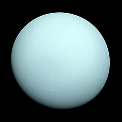

Uranus er den 7. av planetene regnet fra Solen. Dens ekvatorradius er 25 560 km, 4 ganger større enn Jordens,
men densiteten er knapt fjerdeparten av Jordens. Uranus er i likhet med Jupiter,
Saturn og Neptun en gassplanet. Middelavstanden fra Solen er 2 871 millioner kilometer,
eller 19 ganger Jordens avstand.
